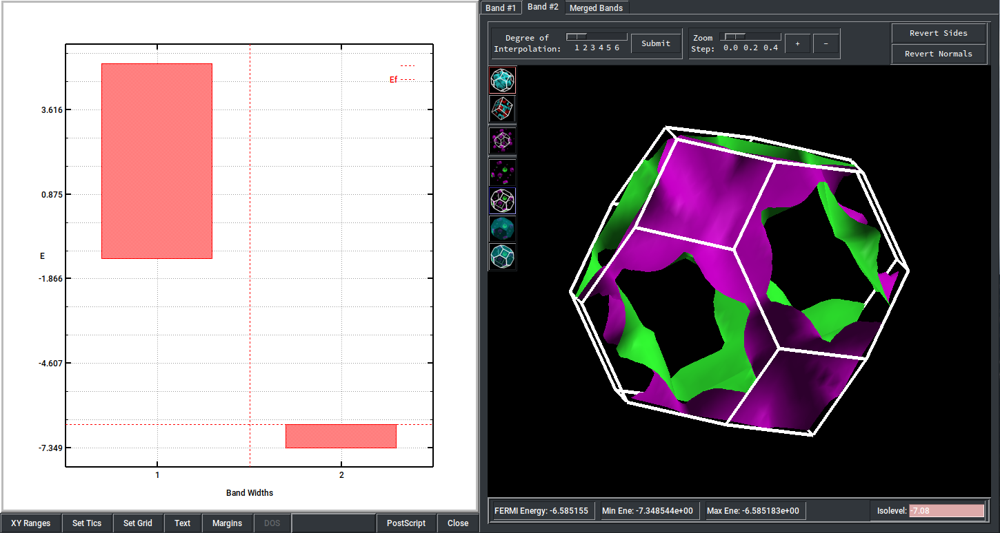
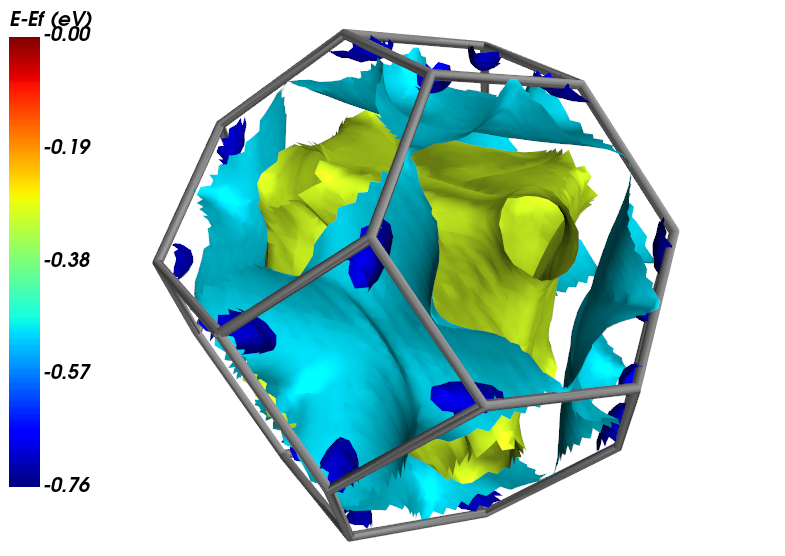

Fermi Surface
Here code examples for Fermi surfaces are given. Fermi surfaces are band structures in 3D, i.e. distributions of \(E(k)\) in the first Brillouin zone (1BZ). Therefore methods are similar to band structures, i.e. projections of \(E(k)\) along the high symmetry lines of 1BZ. For band structures, please refer to the Electronic Structure examples.
NOTE
For 3D and 2D systems only.
The ‘read_Fermi_surface()’ method
This method is defined in the crystal_io.Properties_output class. The fort.35 file generated by the ‘DLV_BAND’ keyword, which specifies the min and max band numbers and the size of k mesh.
The screen output (‘out’ or ‘outp’) is strongly suggested to get Fermi energy. Otherwise the data in fort.35 is used, rather than the energy aligned to \(E_{F}=0\).
\(E(k)\) is saved by a grid defined in reciprocal unit cell, rather than the grid defined in 1BZ.
[2]:
from CRYSTALpytools.crystal_io import Properties_output
fsurf = Properties_output('fsurf_NaCl.out').read_Fermi_surface('fsurf_NaCl.f35')
print('NaCl Fermi energy = {:.2f} {}'.format(fsurf.efermi, fsurf.unit))
print('NaCl grid size = Z {:d} Y {:d} X {:d}'.format(fsurf.bands.shape[1],
fsurf.bands.shape[2],
fsurf.bands.shape[3]))
print('NaCl nband = {:d}'.format(fsurf.bands.shape[0]))
print('NaCl spin = {:d}'.format(fsurf.bands.shape[-1]))
NaCl Fermi energy = -6.59 eV
NaCl grid size = Z 24 Y 24 X 24
NaCl nband = 30
NaCl spin = 1
For spin-polarized cases, the last dimension is doubled.
[3]:
from CRYSTALpytools.crystal_io import Properties_output
f2D = Properties_output('fsurf_GMV.out').read_Fermi_surface('fsurf_GMV.f35')
print('MV graphene Fermi energy = {:.2f} {}'.format(f2D.efermi, f2D.unit))
print('MV graphene grid size = Z {:d} Y {:d} X {:d}'.format(f2D.bands.shape[1],
f2D.bands.shape[2],
f2D.bands.shape[3]))
print('MV graphene nband = {:d}'.format(f2D.bands.shape[0]))
print('MV graphene spin = {:d}'.format(f2D.bands.shape[-1]))
MV graphene Fermi energy = -2.78 eV
MV graphene grid size = Z 1 Y 24 X 24
MV graphene nband = 10
MV graphene spin = 2
The ‘electronics.FermiSurface’ class
This class includes object-oriented methods for data analysis and quick plotting.
The ‘get_bandgap()’ method and ‘bandgap’ attribute
Similar to electronics.ElectronBand class, this attribute gets VBM, CBM and band gap from \(E_{k}\).
[1]:
from CRYSTALpytools.electronics import FermiSurface
fsurf = FermiSurface.from_file('fsurf_NaCl.f35', 'fsurf_NaCl.out')
print('NaCl band gap = {:.2f} {}'.format(fsurf.bandgap, fsurf.unit))
_, _, _, pos = fsurf.get_bandgap()
print('VBM position: X {:.4f} Y {:.4f} Z {:.4f}'.format(pos[0, 0], pos[0, 1], pos[0, 2]))
print('CBM position: X {:.4f} Y {:.4f} Z {:.4f}'.format(pos[1, 0], pos[1, 1], pos[1, 2]))
NaCl band gap = 11.70 eV
VBM position: X 1.0699 Y 1.0699 Z 1.0699
CBM position: X -0.0465 Y 0.5117 Z 1.0699
For spin-polarized cases, this method returns to VBM/CBM of \(\alpha\) and \(\beta\) states separately.
[9]:
from CRYSTALpytools.electronics import FermiSurface
f2D = FermiSurface.from_file('fsurf_GMV.f35', 'fsurf_GMV.out')
print('MV graphene alpha band gap = {:.2f} {}'.format(f2D.bandgap[0], f2D.unit))
_, vbm, cbm, _ = f2D.get_bandgap()
print('Alpha VBM = {:.4f} {}'.format(vbm[0], f2D.unit))
print('Beta CBM = {:.4f} {}'.format(cbm[1], f2D.unit))
MV graphene alpha band gap = 1.80 eV
Alpha VBM = -0.0340 eV
Beta CBM = 0.3848 eV
The ‘to_bxsf()’ method
This method writes data into the BXSF formatted file used by XCrySDen’s Fermi surface viewer. Currently only 3D systems are supported by BXSF format.
Use the band_index option (starting from 1) to specify the band to dump. For spin-polarized systems, attach ‘a’ or ‘b’ for \(\alpha\) or \(\beta\) states.
[1]:
from CRYSTALpytools.electronics import FermiSurface
fsurf = FermiSurface.from_file('fsurf_NaCl.f35', 'fsurf_NaCl.out')
fsurf.to_bxsf('fsurf_NaCl.bxsf', band_index=['vb', 'cb'])
Visualize the valance band in XCrySDen. The isosurface of -0.5 eV below \(E_{F}\) is plotted.

Visualization
The electronics.FermiSurface.plot() method plots:
For 3D systems, isosurfaces of \(E(k)\), which is plotted as 3D isosurfaces.
For 2D systems, the distribution of \(E(k)\), which is plotted as the 3D surface, with XY plane as 1BZ and Z axis as energy.
plot module.3D systems
It plots 1 or more isosurfaces of the same band structure. Though in principle the user can also specify multiple bands with band_index and the same isovalue entry is applied to all the bands, it is not recommended and rarely tested.
[3]:
from CRYSTALpytools.electronics import FermiSurface
fsurf = FermiSurface.from_file('fsurf_NaCl.f35', 'fsurf_NaCl.out')
fsurf.plot('vb', isovalue=[-0.3, -0.5, -0.7], interp='slinear', interp_size=2,
BZ_linewidth=0.5, BZ_color=(0.5, 0.5, 0.5))
Displayed in the pop-up window of MayaVi.

2D systems
For 2D systems, it is possible to plot multiple bands at the same time. isovalue is ignored.
[4]:
from CRYSTALpytools.electronics import FermiSurface
fsurf = FermiSurface.from_file('fsurf_GMV.f35', 'fsurf_GMV.out')
fsurf.plot(['5a', '5b', '6a', '6b'], colormap='jet',
interp='slinear', interp_size=3, BZ_scale=1.5)
Displayed in the pop-up window of MayaVi.
[1]:
# This code block is only used to generate a thumbnail for the example gallary.
import matplotlib.pyplot as plt
fig, ax = plt.subplots()
ax.imshow(plt.imread("./fsurf_GMV.png"))
ax.axis('off')
[1]:
(-0.5, 628.5, 425.5, -0.5)
For more information, please refer to the API documentations.